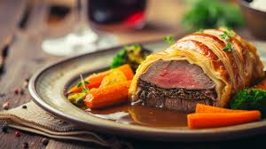

Beef Wellington

Description
This beef Wellington recipe makes an impressive beef tenderloin wrapped in puff pastry and includes how to make a rich red wine sauce to serve with it.
It's easier than you think to make and perfect for holiday entertaining! The beef tenderloin is best served medium-rare.
Ingredients
- 2 1/2 lbs Beef Tenderloin
- 6 Tbsp Butter
- 1 Chopped Onion
- 1/2 Cup Sliced Mushrooms
- 2 oz Liver Paté
- Salt, to Taste
- 1 Package Frozen Puff Pastry, Thawed
- 1 (Large) Egg Yolk
- 1 Can Beef Broth
- 2 Tbsp Red Wine
Steps
- Preheat the oven to 425 degrees F (220 degrees C).
- Place beef tenderloin in a baking dish. Spread 2 tablespoons softened butter over beef.
- Bake in the preheated oven until browned, 10 to 15 minutes. Remove beef from the pan and reserve pan juices; allow beef to cool completely.
- Increase oven temperature to 450 degrees F (230 degrees C).
- Melt 2 tablespoons butter in a skillet over medium heat. Sauté onion and mushrooms in butter for 5 minutes. Remove from heat and let cool.
- Mix paté and remaining 2 tablespoons softened butter together in a bowl; season with salt and pepper. Spread paté mixture over beef.
Top with onion and mushroom mixture.
- Roll out puff pastry dough to about 1/4-inch thickness and place beef in the center.
- Fold up and seal all the edges, making sure the seams are not too thick.
Place beef in a 9x13-inch baking dish, cut a few slits in the top of dough, and brush with egg yolk.
- Bake in the preheated oven for 10 minutes. Reduce heat to 425 degrees F (220 degrees C) and continue baking until pastry is a rich, golden brown, 10 to 15 minutes.
An instant-read thermometer inserted into the center should read between 122 to 130 degrees F (50 to 54 degrees C) for medium rare. Set aside to rest.
- Meanwhile, place reserved pan juices in a small saucepan over high heat.
Stir in beef broth and red wine; boil until slightly reduced, about 5 minutes. Strain and serve with beef.
- Serve hot and enjoy!
Home